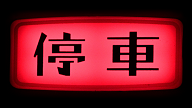
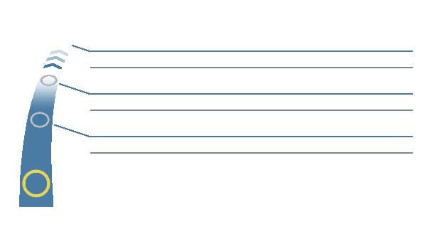
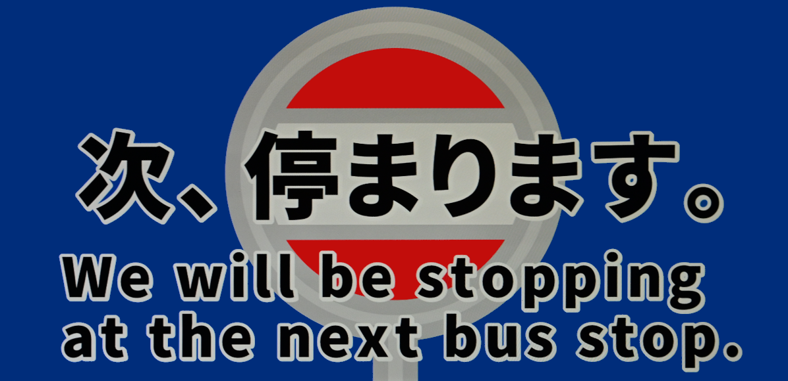
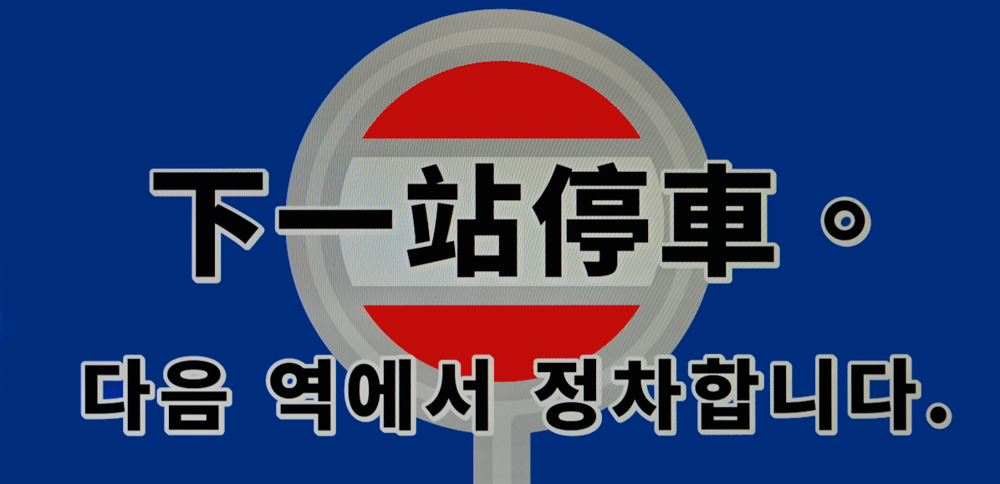
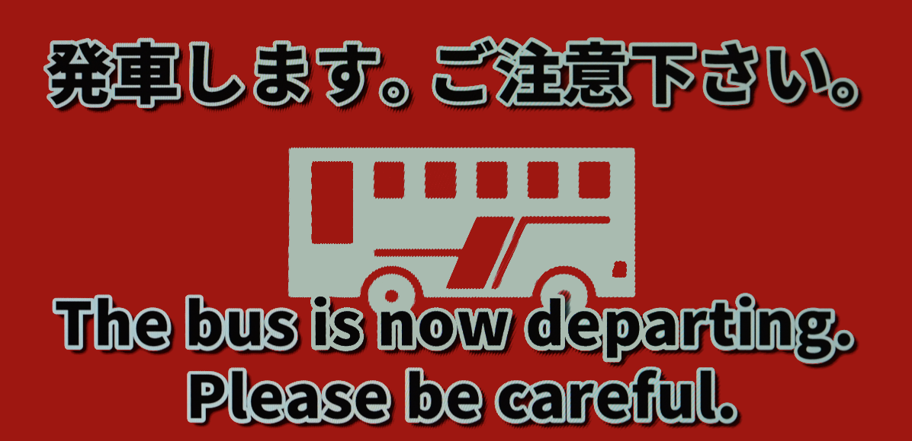
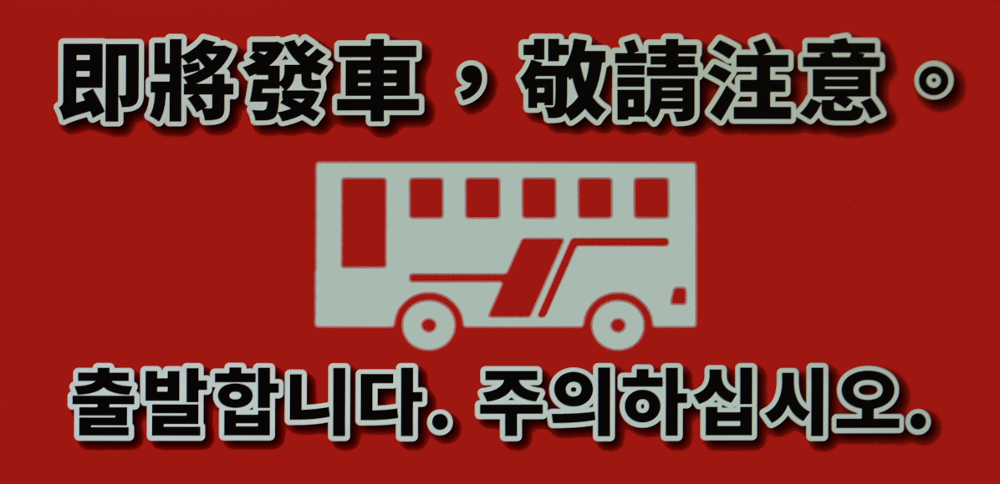

運賃表示器にログイン
ユーザーID
パスワード
ログイン
閉じる
ログアウト
Firebaseに接続中…

路線を読み込み中…
次
は
-- 終点 --
小児半額(但し端数は１０円単位に切り上げ)
整理券
運 賃
次 は ｜ NEXT
-- 次の停留所 --
-- Next Stop --
経由地 ｜ VIA

-- 終点 --
-- Destination --




CSVファイルを選択してください
操作パネル ·
0
アカウント
運行系統
路線を選択
路線を選択してください
戻
次
開
閉
リセット
GPS・運行モード
GPS開始
GPS停止
路線全体
停留所を出発したら自動放送（OFFで手動送り）
検知半径
m
現在地を追従
GPS停止中。位置取得中も手動送りに切り替えられます。
音源設定 · 再生はiPad
押ボタン音源
音源1
音源2
音源3
なし
ドアブザー
ブザー1
ブザー2
ブザー3
ブザー4
読み上げ音声
端末の標準音声